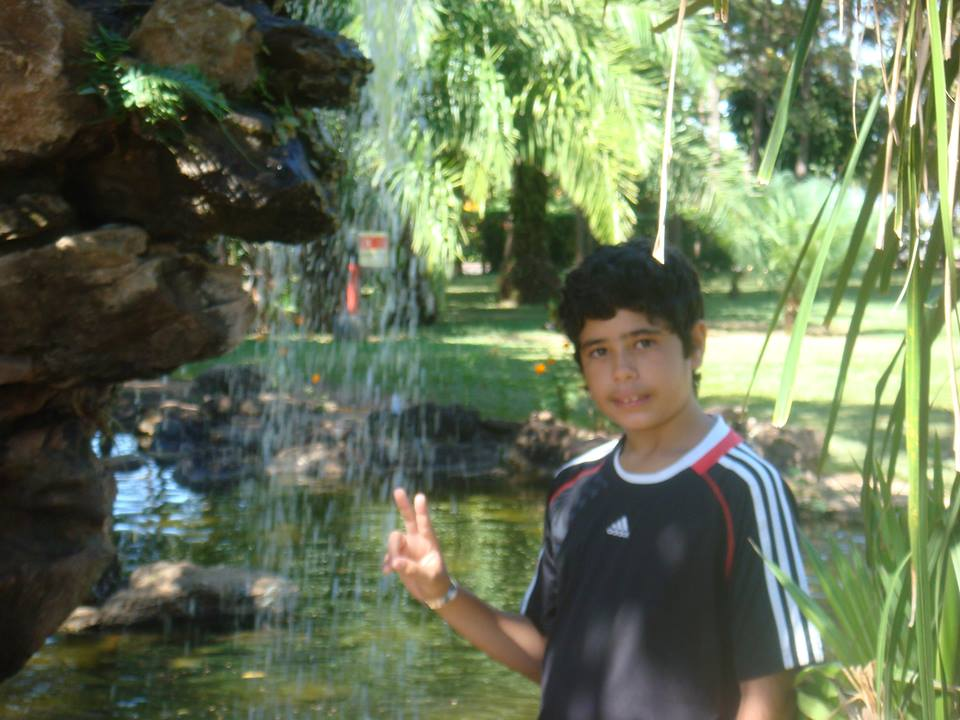
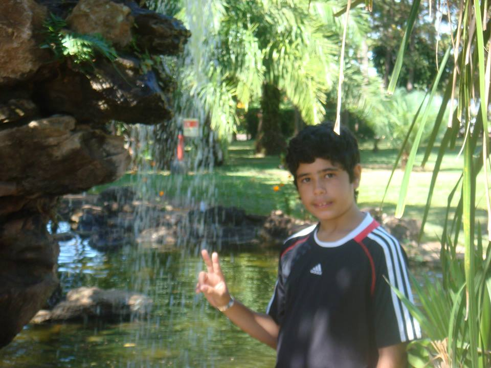

Samuel Furtado Ávila
 

Olá, sou assessor de marketing da orc'estra, e gamificação, de acordo com o dicionário, é a aplicação de técnicas de jogos em contextos fora de jogos. É algo que possui elementos de jogos, com um propósito de ser divertido, um lado experimental artístico, e um objetivo claro além do próprio sucesso no jogo, seja ele para aperfeiçoamento pessoal ou algo de impacto social, um objetivo que conecta o jogo com a realidade. Porém poderia ser muito mais do que isso. Gamificação é muito mais profundo do que aparenta ser, vai além de pontos, troféus ou placares e se aplicada corretamente, com um objetivo, técnicas corretas e dedicação, pode ter um impacto enorme, proporcionando um jeito novo, divertido, atraente e saudável de encarar a realidade dura do cotidiano. Na minha opinião, gamificação é um jeito diferente de encarar a realidade e pode ser a chave para um mundo melhor.
resumo de : https://docs.google.com/document/d/1c1i3-0hjv3aIGAacDIOc7pBZ-_MBhyEG45D3BDJss8c/edit